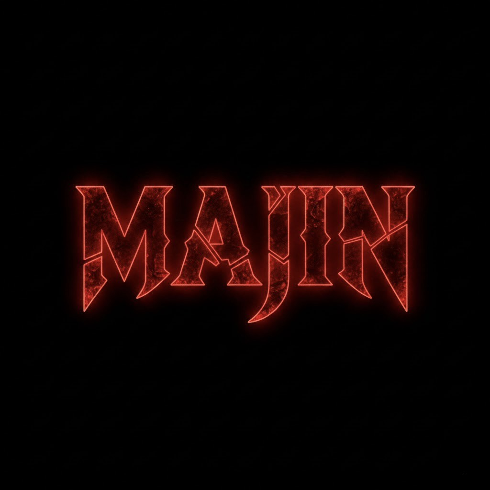

Lade Live-Status...
Willkommen bei der Majin Community!
Die Majin Community ist ein Clan mit klaren Regeln, Respekt und starkem Zusammenhalt.
Unser Team
 👑 OwnerSebastian
👑 OwnerSebastian ⚙️ CommunityverwaltungZarplix
⚙️ CommunityverwaltungZarplix 🛡️ StaffSnow
🛡️ StaffSnowDas Regelwerk
Allgemeines
- Der Nachname „Majin“ ist exklusiv für Mitglieder, die offiziell vom Clan anerkannt wurden.
- Spieler dürfen den Namen nur tragen, wenn sie sich beworben haben und die Clanleitung sie akzeptiert hat.
- Das Ziel des Clans ist es, ein konsistentes, glaubwürdiges und respektvolles Auftreten zu gewährleisten.
Bewerbungsprozess
Jeder Spieler, der den Nachnamen „Majin“ tragen möchte, muss sich schriftlich beim Clan bewerben.
Die Bewerbung muss enthalten:
- Charaktername (Vorname + Nachname „Majin“)
- Eine kurze Hintergrundgeschichte über dich selbst
- Deine Motivation, ein „Majin“ zu sein
- Deine geplante Rolle oder Funktion im Clan
Die Clanleitung prüft die Bewerbung und entscheidet innerhalb von wenigen Tagen, ob der Nachname vergeben wird.
Ablehnungen enden mit einer Sperrfrist (Timeout) von 3 Tagen – danach könnt ihr euch wieder bewerben.
Verhalten & Pflichten
Mitglieder mit dem Nachnamen „Majin“ müssen sich loyal zum Clan verhalten. Der Name wird auf allen Plattformen und in allen unterstützten Spielen aktiv vertreten.
Pflichten:
- Immer den Clan-Namen vertreten, wenn Aktionen im Zusammenhang mit dem Clan stattfinden.
- Konflikte innerhalb und außerhalb des Clans jederzeit sachlich, respektvoll und angemessen lösen.
- Spieler dürfen den Namen nicht für Trolling, Meta-Gaming oder Griefing nutzen.
- Der Nachname darf nicht verkauft, verliehen oder getauscht werden.
Sicherheit & Verbote
- Kein Leaking
- Kein Doxxing
- Keine Werbung
- Kein Spamming
Tritt unserem Live-Chat bei!
Nutze den schwebenden Chat-Button unten rechts auf der Website oder klicke auf den Button, um direkt unserem Server beizutreten!
Majin Discord joinen!